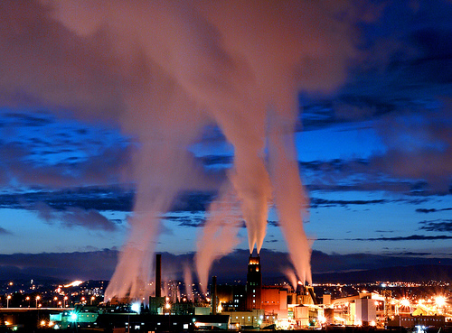

|
Istorie Politică Comunități autonome Mediul înconjurător Economie Demografie Bucătăria spaniolă Seat |
Mediul înconjurătorÎn Spania, emisiile de CO2 au crescut, din anul 1996 indicele a crescut, Spania nereușind să respecte Protocolul de la Kyoto în legătură cu emisiile de gaze cu efect de seră. Rapoartele despre mediul înconjurător au apărut datorită recomandărilor Organizației Națiunilor Unite.

Spania este afectată de un fenomen de accentuare a secetei, între anii 1880-2000, mai mult de jumătate din acești ani fiind foarte secetoși. În anii '80, șapte ani au fost desemnați ca fiind secetoși sau foarte secetoși, iar în anii '90, cinci ani au primit același calificativ. |